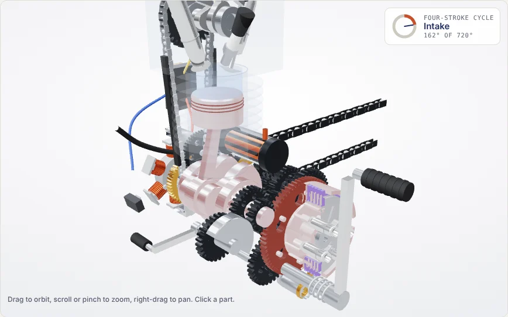

The full page for this part is being finished. The links below already work.
Repair / Parts / Engine (complete)

Sources
- K-Light 125 manual, PDF pages 11, 19, 60, 191, 195
- Unit 2 The Motorcycle, PDF page 4
- MAVCC Motorcycle Mechanic, PDF page 250